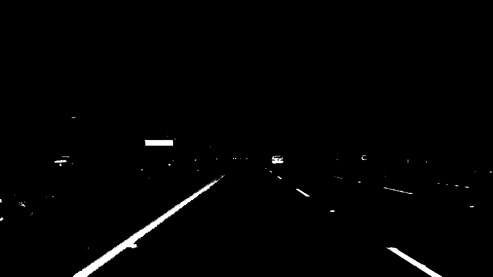
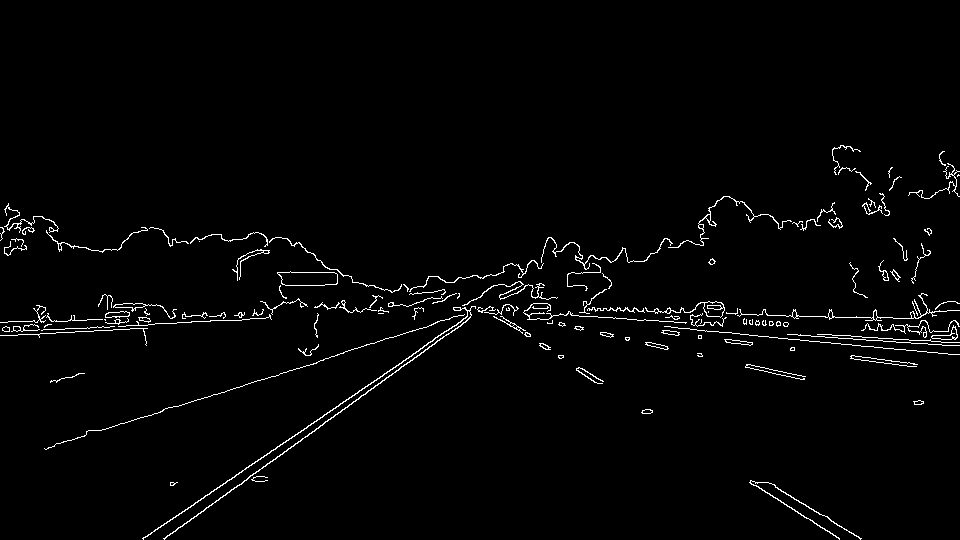
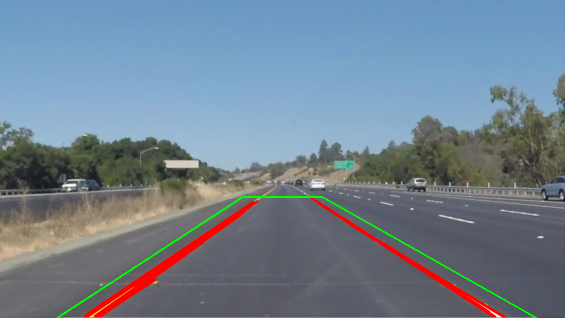
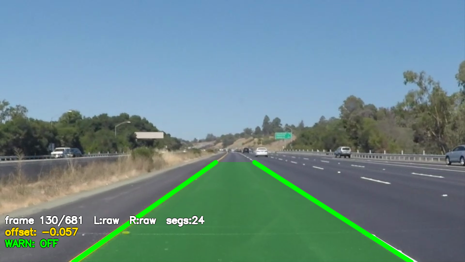

05
차선 검출 — 색상필터 → Canny → Hough → 폴리핏
Detection Pipeline
HSV inRange
— 흰색·노란색 차선 후보 마스크
Canny
— 엣지 검출 후 마스크와 결합
HoughLinesP
— 선분 검출, 기울기로 좌/우 분리
길이가중 1차 폴리핏
— 좌우 각각 단일 직선으로 수렴
색상 마스크 + Canny 엣지 교집합
→ 노이즈 최소화, 차선 픽셀만 추출

HSV 흰/노랑 마스크

Canny 엣지

HoughLinesP + ROI

폴리핏 차선